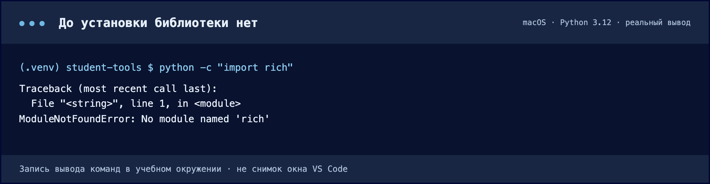
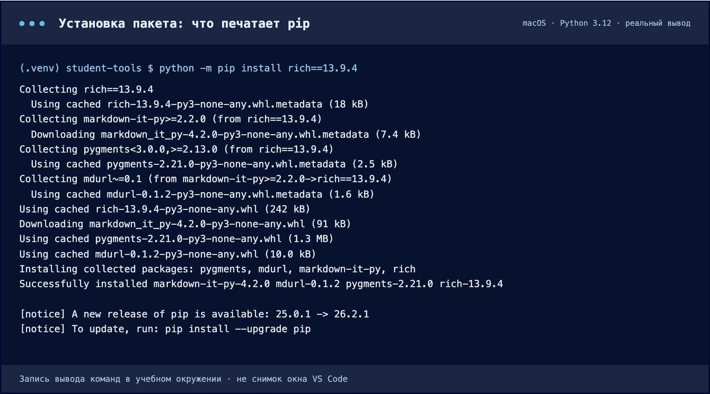
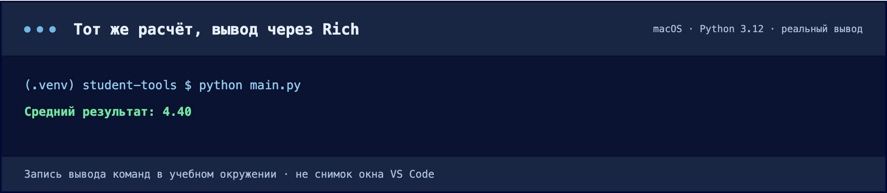
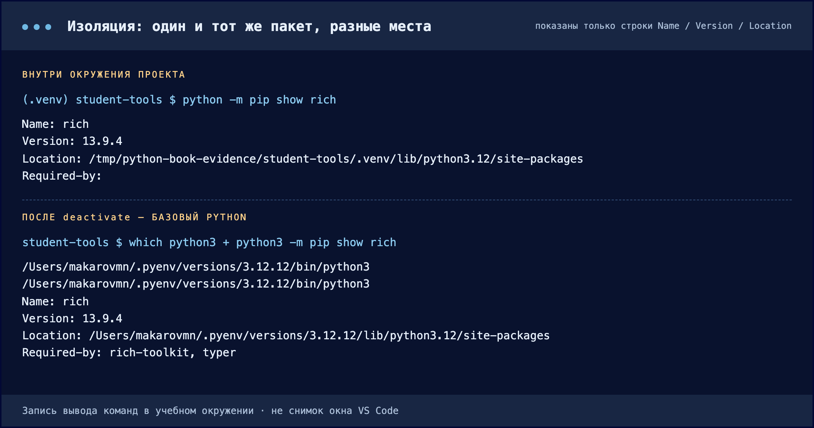

Добавляем первую зависимость
Устанавливаем Rich в окружение проекта и меняем только способ вывода.
Добавляем библиотеку fatih/color в модуль и меняем только способ вывода.
Что именно мы устанавливаем
В Python есть стандартная библиотека — например, sys и pathlib. Она приходит вместе с Python. Rich — сторонняя библиотека для оформления терминального вывода. Она отдельно устанавливается в окружение и становится зависимостью нашей программы.
pip — менеджер пакетов Python. По умолчанию он получает пакеты из PyPI — каталога Python-проектов. Имя устанавливаемого дистрибутива и имя в импорте не всегда совпадают; для Rich в обоих местах используется rich.
python -c "import rich"
Последняя строка называет и ошибку, и имя модуля. До установки это ожидаемый результат, а не поломка окружения.
Скачать текст вывода ↓ · Нажмите на изображение, чтобы увеличить.Установите и проверьте
- Где
- Активная .venv, терминал в student-tools.
- Действие
- Выполните python -m pip install rich. Дождитесь окончания; затем pip show rich.
- Результат
- В выводе есть Name: rich, Version и Location внутри .venv.
- Проверка
- Выполните python -c "import rich". Отсутствие ошибки означает успешный импорт.
python -m pip install rich
python -m pip show rich
python -m pip list
Collecting — пакет и его зависимости найдены в индексе; Installing collected packages — распаковка в окружение; Successfully installed — итог с версиями. Сообщение о новой версии pip не является ошибкой.
Скачать текст вывода ↓ · Нажмите на изображение, чтобы увеличить.Почему python -m pip, а не просто pip
На одном компьютере обычно живёт несколько Python: системный, установленный вами и тот, что лежит внутри .venv. У каждого из них свой pip и свой набор установленных библиотек. Команда pip — это отдельная программа на диске, и какая именно из них запустится, решает переменная PATH. Отсюда типичная ситуация: установка прошла успешно, а программа всё равно пишет ModuleNotFoundError — пакет уехал в другой Python.
Запись python -m pip читается так: «возьми тот Python, который сейчас выбран, и запусти внутри него модуль pip». Библиотека гарантированно попадает в окружение того интерпретатора, которым вы запускаете свою программу. Проверить, какой pip отработал, можно командой python -m pip --version: она печатает путь к нему.
Модуль pip запускается внутри выбранного Python, поэтому пакет попадает в окружение проекта. Тот же интерпретатор потом запускает вашу программу — и видит библиотеку.
Для установки нужен доступ к сети: pip скачивает пакет из PyPI — общего каталога Python-библиотек.
В pip show rich найдите Name, Version и Location. Последнее поле должно указывать внутрь вашей .venv. В pip list появятся Rich и его собственные зависимости — это нормально.

Location показывает, что пакет установлен в окружение этого проекта. Вторая команда отвечает на вопрос «а какой pip сейчас отработал»: она печатает путь к нему и версию Python. Числа версий на вашем компьютере будут другими.
Скачать текст вывода ↓ · Нажмите на изображение, чтобы увеличить.Продолжим тот же main.py
- Где
- Редактор: существующий main.py.
- Действие
- Замените содержимое кодом ниже → сохраните → python main.py.
- Результат
- Тот же результат 4.40 выводится средствами Rich.
- Проверка
- Если в терминале нет цвета, проверьте число и отсутствие ошибок: поддержка цвета зависит от терминала.
Замените содержимое существующего main.py версией ниже. Расчёт не меняется: добавляются импорт Console и вывод через console.print. Импорт получает класс из модуля rich.console; Console() создаёт объект для работы с терминалом.
from rich.console import Console
def calculate_average(values: list[int]) -> float:
if not values:
raise ValueError("Список оценок не должен быть пустым")
return sum(values) / len(values)
def format_average(value: float) -> str:
return f"Средний результат: {value:.2f}"
def main():
values = [5, 4, 5, 3, 5]
average = calculate_average(values)
console = Console()
console.print(f"[bold green]{format_average(average)}[/bold green]")
if __name__ == "__main__":
main()При отдельном скачивании файл называется 02-rich-main.py: перенесите его содержимое в ваш main.py. Метки [bold green] и [/bold green] задают оформление Rich. В обычном терминале результат будет зелёным; при перенаправлении вывода цвет может отсутствовать.
python main.pyСредний результат: 4.40
Число не изменилось — изменился способ печати. Цвет задают метки [bold green] в строке, а поддержка цвета зависит от терминала.
Скачать текст вывода ↓ · Нажмите на изображение, чтобы увеличить.Проверяем изоляцию: смотрим на Location
Мы установили Rich «в проект». Проверим, что это действительно так: сравним, что отвечает pip внутри окружения и что — снаружи. Сравнивать будем одну строку: Location. Она показывает папку, в которой лежит библиотека.
- Где
- Тот же терминал, корень student-tools.
- Действие
- 1) При активном окружении: python -m pip show rich — запомните Location. 2) Выполните deactivate. 3) Повторите проверку базовым Python: python3 -m pip show rich (Windows: py -m pip show rich).
- Результат
- Либо pip пишет WARNING: Package(s) not found: rich, либо печатает другой Location — вне вашей .venv.
- Проверка
- Строки Location из двух выводов не должны совпадать.
Возможны два исхода, и оба подтверждают изоляцию:
- Rich в базовом Python не установлен. Тогда
pip showнапишетWARNING: Package(s) not found: rich, аpython3 -c "import rich"— ModuleNotFoundError. Самый наглядный случай. - Rich в базовом Python уже был — например, его поставили раньше для другой задачи. Ошибки не будет. Посмотрите на
Location: путь ведёт в общую папку Python, а не в.venvвашего проекта. Это другая копия библиотеки, возможно другой версии; к вашему проекту она отношения не имеет.
Отсюда правило главы: изоляцию доказывает путь, а не наличие ошибки. Одна и та же библиотека может стоять в нескольких местах; важно, какая из них видна тому Python, которым вы запускаете программу.

Реальный прогон на компьютере, где Rich был установлен и в базовый Python. Версия совпала, но Location разный: сверху — папка проекта, снизу — общая папка Python. Строка Required-by показывает, что базовой копией пользуются другие программы.
Скачать текст вывода ↓ · Нажмите на изображение, чтобы увеличить.Что именно мы добавляем
В Go есть стандартная библиотека — например, fmt и errors, которыми мы уже пользовались. Она приходит вместе с Go, и в go.mod не попадает. fatih/color — сторонняя библиотека для цветного вывода в терминал. Её нужно добавить в модуль, и тогда она станет зависимостью нашей программы.
Отдельного менеджера пакетов в Go нет: с зависимостями работает сама команда go. Пакеты она берёт не из центрального каталога, а прямо из репозиториев — поэтому импорт выглядит как адрес: github.com/fatih/color. Между вами и репозиторием стоит прокси-сервер модулей proxy.golang.org, который хранит копии версий: даже если автор удалит репозиторий, уже выпущенная версия останется доступной.
go list -m allДобавьте и проверьте
- Где
- Терминал в student-tools, рядом с go.mod.
- Действие
- Выполните go get github.com/fatih/color. Дождитесь окончания; затем откройте go.mod.
- Результат
- В go.mod появился раздел require со строкой github.com/fatih/color и номером версии.
- Проверка
- Выполните go list -m all: в списке есть color и его собственные зависимости.
go get github.com/fatih/color
go list -m all
go list -m -f "{{.Path}} {{.Version}} {{.Dir}}" github.com/fatih/colorПервая команда скачивает библиотеку и записывает её версию в go.mod. Вторая печатает полное дерево зависимостей. Третья отвечает на вопрос «а где физически лежит этот код»: она покажет путь в кэш модулей, и в имени папки будет видна версия — например color@v1.17.0.
module example.com/student-tools
go 1.21
require github.com/fatih/color v1.17.0
require (
github.com/mattn/go-colorable v0.1.13 // indirect
github.com/mattn/go-isatty v0.0.20 // indirect
golang.org/x/sys v0.18.0 // indirect
)Номера версий у вас будут новее — это нормально. Обратите внимание на два раздела require. В первом — то, что вы запросили сами. Во втором, с пометкой // indirect, — зависимости самой библиотеки color: их Go добавил без вашего участия, но версии зафиксировал так же строго.
Почему рядом появился go.sum
Вместе с go.mod команда создала файл go.sum. В нём — контрольные суммы каждой скачанной версии. При следующей сборке Go пересчитает суммы и сравнит их с записанными: если содержимое версии где-то подменили, сборка остановится с ошибкой checksum mismatch. Файл большой и выглядит нечитаемо, но править его руками не нужно — он служебный. В Git его обязательно отправляют вместе с go.mod.
В Python установка и фиксация версии — два отдельных действия: сначала pip install rich, потом pip freeze > requirements.txt, и забыть второй шаг легко. В Go это одно действие: go get сам дописывает версию в go.mod. Поэтому «у меня работает, а у него нет» из-за не зафиксированной версии в Go практически не случается.
Где здесь изоляция
Библиотека физически лежит в общем кэше, одном для всех ваших проектов. Изоляцию даёт не место на диске, а запись в go.mod: другой проект может требовать color v1.13.0, и он получит именно её — рядом в кэше будут лежать обе версии. Проверьте это сами командой go list -m -f "{{.Dir}}" github.com/fatih/color: в пути видна версия, а значит смена версии в go.mod приведёт к другой папке.
Продолжим тот же main.go
- Где
- Редактор: существующий main.go.
- Действие
- Замените содержимое кодом ниже → сохраните → go run .
- Результат
- Тот же результат 4.40 выводится зелёным.
- Проверка
- Если в терминале нет цвета, проверьте число и отсутствие ошибок: поддержка цвета зависит от терминала.
Замените содержимое существующего main.go версией ниже. Расчёт не меняется: добавляются импорт библиотеки и вывод через color.Green.
package main
import (
"errors"
"fmt"
"github.com/fatih/color"
)
func calculateAverage(values []int) (float64, error) {
if len(values) == 0 {
return 0, errors.New("список оценок не должен быть пустым")
}
sum := 0
for _, value := range values {
sum += value
}
return float64(sum) / float64(len(values)), nil
}
func formatAverage(value float64) string {
return fmt.Sprintf("Средний результат: %.2f", value)
}
func main() {
values := []int{5, 4, 5, 3, 5}
average, err := calculateAverage(values)
if err != nil {
color.Red("Ошибка: %v", err)
return
}
color.Green(formatAverage(average))
}Импорты разделены пустой строкой: сверху стандартная библиотека, снизу сторонние. Так принято в Go, и gofmt этот порядок сохраняет. Обращение color.Green читается как «функция Green из пакета color» — имя пакета в Go всегда остаётся в строке вызова, сокращённой формы вроде from … import … здесь нет.
go run .Средний результат: 4.40Число не изменилось — изменился способ печати. Цвет добавляет библиотека; при перенаправлении вывода в файл она сама отключает цветовые коды, чтобы файл остался читаемым.
Лишнее и недостающее: go mod tidy
Со временем импорты в коде и записи в go.mod расходятся: библиотеку удалили из кода, а строка осталась; или наоборот — импорт добавили руками, а версию не записали. Приводит их в соответствие одна команда.
- Где
- Терминал в student-tools.
- Действие
- Закомментируйте строку с color.Green в main.go → выполните go mod tidy → откройте go.mod.
- Результат
- Строка с color из go.mod исчезла: в коде её больше никто не импортирует.
- Проверка
- Верните строку, снова выполните go mod tidy — зависимость вернулась на место.
go mod tidy
go list -m allgo mod tidy читает все импорты проекта и делает go.mod их точным отражением: недостающее добавляет, лишнее убирает, go.sum приводит в порядок. Отсюда правило главы: зависимости проекта определяет код, а не файл. Файл — это записанный результат.
Выполняйте go mod tidy перед каждой отправкой работы. Это же требование будет в критериях домашнего задания.
Проверьте себя · Сборка пишет «no required module provides package». Что проверить первым?
Сначала — находится ли терминал в папке с go.mod: без модуля Go не с чем сверять импорты. Затем выполните go mod tidy — она добавит то, что импортирует код. Если после этого ошибка осталась, проверьте написание пути импорта: он должен точно совпадать с адресом репозитория, включая регистр букв.
Проверьте себя · Установка успешна, но rich не найден. Что проверить первым?
Выполните sys.executable и python -m pip show rich тем же Python, которым запускаете программу. Сопоставьте путь .venv с интерпретатором VS Code.